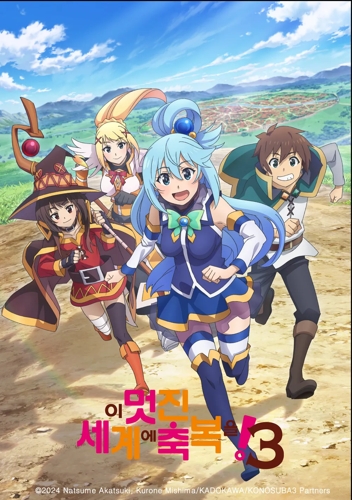
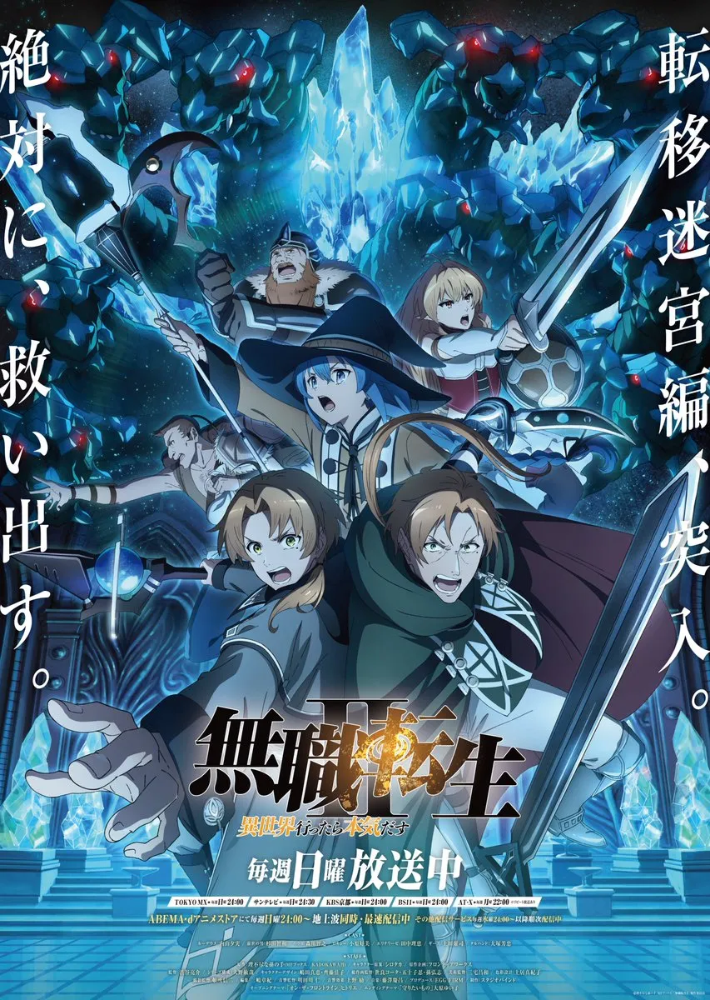

원작:하세쿠라 이스나
제작사:교토 애니메이션
총감독:타카하시 타케오
감독:산페이 히지리
스트리밍:라프텔,넷플릭스
편당 러닝타임:24분
화수:25화(예정)
시청 등급:15세
줄거리
'젊은 행상인 크래프트 로렌스는 짐마차를 끄는 한 마리 말을 벗 삼아 마을에서 마을로 이동하며 상품을 거래하는 나날을 보내고 있었다.
어느 날, 황금색 보리밭이 펼쳐진 작은 마을을 방문한 그는 동물 귀와 꼬리가 달린 아름다운 소녀를 만났다.
「내 이름은 호로」
자신을 '현랑'이라고 소개한 호로는 풍작을 관장하는 늑대의 화신이었다──.
'먼 북쪽에 있을 터인 고향 요이츠의 숲으로 돌아가고 싶다'라는 그녀의 소원을 이뤄주기 위해
로렌스와 호로는 북쪽을 목적지로 함께 상행을 하는 길동무가 된다.
하지만 행상인의 여행에는 예상 밖의 파란이 있기 마련이었는데.......
고독했던 행상인과 고독했던 늑대의 화신이 탄 마차가 지금, 시끄럽게 달리기 시작한다.'
PV

이 멋진 세계에 축복을! 3
이세계,판타지,코미디
×
이 멋진 세계에 축복을! 3
원작:아카츠키 나츠메
제작사:교토 애니메이션
총감독:카나사키 타카오미
감독:아베 유지로
스트리밍:라프텔
편당 러닝타임:24분
화수:11화(예정)
시청 등급:15세
줄거리
'
교통사고(?!)로 인해 어이없게 인생의 막이 내려갈 터였던,
게임을 사랑하는 은둔형 외톨이 사토 카즈마.
그는 엉뚱한 계기로 여신인 아쿠아를 데리고 이세계로 전생하게 되었다.
'RPG 게임과 같은 이세계에서, 동경하던 모험가 생활을 엔조이! 노려라, 용사!'라며
들뜨기도 잠시. 전생한 카즈마에게는 성가신 일들만 닥쳐왔다.
트러블메이커인 잉여신 아쿠아, 중2병이 악화된 마법사 메구밍,
망상 논스톱인 여기사 다크니스라는, 능력치만은 높지만
매우 유감스러운 3명과 파티 맺기. 빚에 눈이 돌아간 끝에
국가전복죄 혐의로 재판받기. 마왕군 간부 토벌하기. 그리고 간간이 죽기 등.
그러던 어느 날, 홍마의 마을에서 돌아온 카즈마 일행에게 편지가 도착했다.
그 내용은, 왕녀 아이리스 가 마왕군 간부를 쓰러뜨린
카즈마 일행의 모험담을 듣고 싶다는 것이었다.
호위 겸 교육 담당인 클레어와 레인을 데리고
액셀 마을을 방문한 아이리스와 카즈마 파티와의
대면은 평화롭게 끝난 것처럼 보였지만...
'또 저한테 모험담을 들려주겠다고 했잖아요?'
왕녀 아이리스가 카즈마와 친해지게 되었다?!
카즈마가 눈을 뜨자, 그곳은 무려 왕도! 아이리스의 요청에 따라
그곳에 체류하는 가운데, 왕성에서의 고급진 생활에 맛이 든 결과
마침 잘됐다며 눌러앉기로 결심한 카즈마.
하지만, 그 무렵 왕도에서는 의적이 암약하는 사건이 발생했는데..!'
PV

무직전생 Ⅱ ~이세계에 갔으면 최선을 다한다~
이세계 전생
×
무직전생 Ⅱ ~이세계에 갔으면 최선을 다한다~
원작:리후진 나 마고노테
제작사:스튜디오 바인드
감독:히라노 히로키파트 1
→ 시부야 료스케파트 2
시리즈 구성:오오노 토시야
스트리밍:라프텔,넷플릭스
편당 러닝타임:24분
화수:0화+24화(예정)(분할 2쿨)
시청 등급:19세
줄거리
'나는 이 세계에서 최선을 다하겠어!'
34세 총각에 무직인 방구석 폐인이었던 남자.
그는 부모님의 장례식 날에 집에서 쫓겨나 트럭에 치여 목숨을 잃었다.
다시 눈을 떴을 때 그는 검과 마법이 존재하는 이세계에서 아기로 다시 환생해 있었다!
쓰레기처럼 살아온 남자는 소년 루데우스로서 이세계에서 최선을 다해 살아가기로 맹세한다!
루데우스를 기다리는 것은 로리 마술사, 엘프 귀를 가진 소꿉친구,
흉포한 새침데기 아가씨와 그 외 다양한 인간들과의 만남. 그리고 가혹한 모험과 전투.
그의 새로운 인생이 움직이기 시작한다!
'인생 재시작' 판타지, 개막!